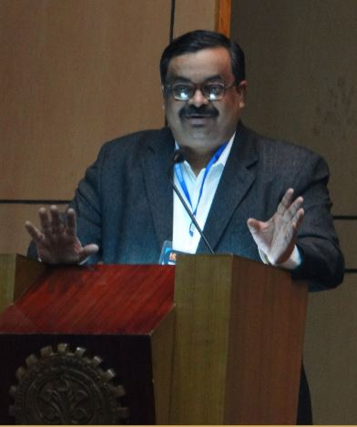
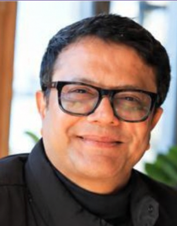
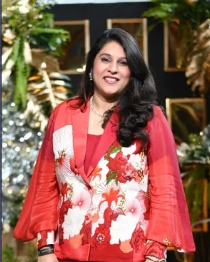

Segment 1 · Guest Speakers
Keynote addresses in the Information Technology segment.

Prof. Partha Pratim Chakrabarti
Former Director, IIT Kharagpur
Former Director of IIT Kharagpur, he is a leading computer scientist whose work spans Artificial Intelligence, VLSI design and embedded systems. His pioneering work, including architecting the National Digital Library of India, led to him receiving the prestigious Shanti Swarup Bhatnagar Prize, J.C. Bose Fellowship and President of India Gold Medal.
Prof. Manoshi Roychowdhury
Co-Chairperson, Techno India Group
Co-Chairperson of Techno India Group, she has helped shape its pan-India educational institutions. Her association with “Monoshij” reflects her commitment to mental wellness and social impact. She is a recipient of the Shepreneur Award for women’s leadership, among others, for excellence in higher education and entrepreneurship.
Prof. Saikat Majumdar
Senior Scientist, CSIR-IICB, Kolkata
A Senior Scientist at CSIR-IICB, Kolkata, he specializes in molecular and cellular immunology, with expertise in T-cell and stromal cell biology, cellular metabolism, autoimmune disorders, and inflammatory diseases, advancing therapeutic strategies through disease modeling and cytokine research.
Segment 2 · Guest Speaker & Moderator
From Idea to Enterprise: the Business Product Pitch.
Ouyang Huifeng
Acting Consul General of China, Kolkata
In this key regional post, he oversees diplomatic and consular operations across eastern India, focusing heavily on fostering sub-national cooperation, managing bilateral trade discussions and driving cultural diplomacy. Prior to his assignment in Kolkata, he built significant diplomatic experience in Southeast Asia, notably serving as both the Deputy Consul General and Acting Consul General in Kota Kinabalu, Malaysia.
Swati Gautam
Founder-CEO, Necessity
A seasoned entrepreneur, she is the Founder-CEO of Necessity. She brings 35 years of experience creating India’s only fitted women’s intimate wear brand. She taught journalism at St. Xavier’s College, Kolkata, holds a Master’s from Sheffield, writes fortnightly broadsheet columns, and authored West Bengal Police’s official coffee table book.
Segment 2 · Honourable Judges
Entrepreneurs and professionals on the Segment 2 judging panel.

Suresh Agarwal
Founder & CEO, Satellite Group
Founder and CEO of Satellite Group, he is an entrepreneur and sustainability advocate with over 35 years of experience across real estate, retail and agriculture. Through Greenic Farms, he promotes regenerative farming and environmental education, while his Good Earth Foundation supports community development.
Urvika Kanoi
Chef & Entrepreneur
A renowned chef and entrepreneur. She is the founder of The Daily, Kolkata, and Café Duco, in Mumbai and Kolkata. She is an alumna of Le Cordon Bleu, London, and has been recognised as Condé Nast Traveller’s “40 Under 40”. She has also been awarded the Best Chef of the Year at the Times Food & Nightlife Awards (2024).

Neha Jain
Chair, Women’s Wing, ICBI
An accounts and administration professional with a decade of experience supporting the financial and operational growth of Studio WB, an established interior design firm. She is the chair of the Women’s Wing of the International Chamber of Business and Industry (ICBI).
Akanksha Modi
Founder, Roots & Herbs and JUUELL
An entrepreneur and cosmetic chemist, she is the founder of Roots & Herbs and JUUELL. With over two decades of experience in beauty and wellness, she grew Roots & Herbs from a kitchen-based venture into an Ayurvedic and vegan personal-care brand present in over 10 countries.